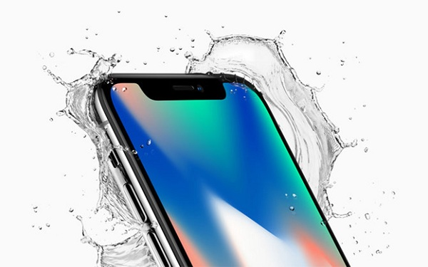

Sau nhiều lần bị chê trách vì không có gì mới mẻ trong thiết kế, phải đến phiên bản kỉ niệm 10 năm iPhone, Apple mới tung ra được một chiếc iPhone có thiết kế hoàn toàn khác biệt.
iPhone X tự hào vì sở hữu màn hình lớn 5.8 inch không viền, ứng dụng công nghệ OLED, mà hãng tự hào đặt cho cái tên “super Retina”. Màn hình này có độ phân giải lên đến 2,436 x 1,125 pixel, mật độ điểm ảnh 458 ppi, giúp chi tiết hình ảnh trở nên mịn màng và sắc nét hơn các sản phẩm tiền nhiệm.
iPhone X đã loại bỏ hoàn toàn nút Home cùng Touch ID ở đó để thay vào bằng những công nghệ mới. Màn hình gần như chiếm toàn bộ mặt trước, chỉ có cụm camera và đèn LED làm nó lẹm xuống đôi chút.
Ở mặt sau, iPhone X có lớp vỏ làm toàn bằng kính vô cùng sang trọng và bóng bảy. Kết hợp với đó là khung viền kim loại ấn tượng. Cụm camera kép đặt dọc bên trái mặt lưng cũng khá phù hợp, dù nhiều người chưa hẳn đã quen với việc này.
Các đặc điểm khác về thiết kế iPhone X bao gồm loại bỏ cổng tai nghe 3.5mm và tích hợp thêm một nút riêng để gọi trợ lý ảo Siri.
Cấu hình iPhone X đương nhiên là cực khủng nhờ sở hữu con chip A11 Bionic sáu nhân.
Hai nhân Monsoon của A11 mạnh hơn 25% so với hai nhân Hurricane của. Đồng thời, A11 cũng có 4 nhân Mistral tốc độ làm việc nhanhh hơn hai nhân Zephyr của “đàn anh” đến 70%.
Theo kết quả đăng tải trên trang đo hiệu năng Geekbench, A11 đạt đến 9959 điểm đa nhân và 4061 điểm đơn nhân. Điểm đa nhân của nó cao hơn Snapdragon 835 – con chip “xịn” nhất của smartphone Android gần 3000 điểm, trong khi điểm đơn nhan thì gấp đôi. Không còn gì để bàn cãi nữa, A11
Bionic chính là con chip di động “khủng” nhất hiện nay.
Camera kép trên iPhone X đi đầu giới công nghệ
Chính sự tuyệt vời của camera kép trên iPhone X mà dư luận đã sẵn sàng chấp nhận việc Apple chỉ xoay 90 độ khi thiết kế cụm camera kép cho smartphone này. Cụ thể, iPhone X cso hai camera sau, cả hai cùng có độ phân giải 12MP, một cảm biến có khẩu độ f/1.8 và cảm biến còn lại khẩu độ f/2.4, với khả năng zoom quang học 2X. Điều đặc biệt là cả hai camera này đều được trang bị khả năng chống rung quang học OIS cực tốt. Ngay cả khi bạn di chuyển hay không chắc tay, những bức ảnh và thước phim tạo ra từ iPhone X vẫn rất chuẩn và sắc nét.
Một tính năng khác là chụp ảnh xóa phông có từ thời iPhone 7 Plus cũng được phát triển. Chế độ Potrait Mode trên iPhone X hoạt động rất chính xác, giúp bạn tạo ra những bức ảnh đẹp ngang máy ảnh cơ. Bên cạnh đó, khả năng chỉnh sáng theo thời gian thực cũng giúp camera iPhone X ghi điểm cực lớn.
Ngoài ra, iPhone X cũng có khả năng quay video cực tốt. Nhờ tính năng mã hóa video mới của Apple, phần mềm sẽ phân tích mỗi khung hình trong các phần nhỏ nhất và những nội dung mà phần này có, từ đó hiệu chỉnh chất lượng video phù hợp. iPhone X cũng có khả năng quay slow motion Full HD với 240 fps, gấp đôi số khung hình so với iPhone 7 Plus.
Đối với camera trước, Apple trang bị cho flagship này máy ảnh độ phân giải 7MP. Hãng không tập trung nhiều cho việc giới thiệu camera selfie, tuy nhiên, chúng ta có thể khẳng định về độ sắc nét và chân thực của những bức ảnh “tự sướng” tạo ra từ iPhone X.

Trước hết chúng ta phải kế đến tính năng bảo mật bằng nhận diện khuôn mặt của iPhone X. Tính năng này hoạt động nhờ đèn flood illuminator và camera hồng ngoại. Thông số nói ra thì khá phức tạp, tuy nhiên bạn có thể tin rằng công nghệ này có tỉ lệ nhận diện sai chỉ là 1/1.000.000. Như vậy, nó đảm bảo chính xác hơn gấp 20 lần so với Touch ID. Đặc biệt, hệ thống quét khuôn mặt có thể nhận ra được những thay đổi trên mặt chủ nhân, như mọc râu hay thay đổi kiểu tóc.
Tính năng thú vị thứ hai là Animoji. Trên iPhone X có một hệ thống các icon rất vui nhộn, khi bạn chọn nó, nhìn vào màn hình và nói chuyện, emoji này sẽ chuyển động theo khẩu hình miệng của bạn một cách rất hóm hỉnh và chính xác đến không ngờ.
Thời lượng pin cực tốt, có sạc nhanh
Như thông lệ, Apple không bao giờ công bố dung lượng pin của iPhone. Tuy nhiên, hãng khẳng định rằng thời lượng pin trên iPhone X sẽ cao hơn iPhone 7 Plus 2 giờ. Với màn hình OLED 5.8 inch mà duy trì thời lượng như vậy, quả thật pin iPhone X cũng phải rất “trâu”.
Tuy nhiên, điểm đáng mừng hơn là iPhone X đã có sạc nhanh và hỗ trợ sạc không dây. Bấy lâu nay iFan chỉ mong chờ có thế. Được biết, máy sẽ có khả năng sạc 50% pin trong vòng 30 phút. Tuy nhiên, củ sạc đi kèm máy không hỗ trợ tính năng này. Muốn sạc nhanh, bạn phải mua thêm phụ kiện là các adapter USB-C với dòng ra 29W, 61W hoặc 87W. Mức giá tối thiểu cho sạc dòng ra 29WW cũng lên đến khoảng 1,7 triệu đồng.
Giá bán iPhone X - xứng đáng cho siêu phẩm
iPhone X được ra mắt với 2 phiên bản bộ nhớ 64GB và 256GB với mức giá lần lượt là 999 USD (22,7 triệu) và 1149 USD (26,1 triệu). Tuy nhiên, đó chỉ là giá bán iPhone X tại “quê nhà”. Ở một số thị trường, trong đó có Việt Nam, giá của siêu phẩm mừng 10 năm Apple sẽ nhỉnh hơn một chút. Tuy nhiên, bạn có thể mua iPhone X giá rẻ tại Viettel Store với những những ưu đãi tốt nhất và tiết kiệm nhất.